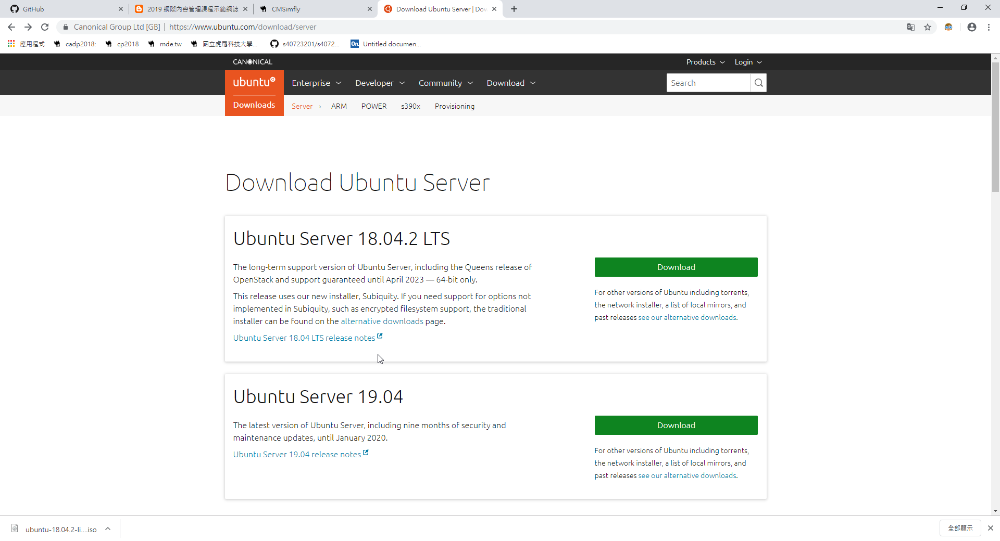
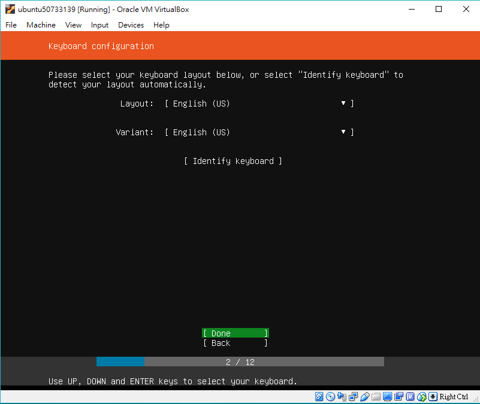

擲骰子 <<
Previous Next >> 校園授權軟體
ubuntu虛擬主機架設
前言:Ubuntu是以桌面應用為主的Linux發行版，Ubuntu由Canonical公司發布，他們提供商業支援。它是基於自由軟體
1. 首先到這個網站下載Ubuntu Server 18.04.2 該版本

2. 下載完成後開啟Oracle VM VirtualBox點擊新增
3. 接著名稱自行命名，類型請選擇Linux，版本為Ububtu (64-bit)
4. 接下來會跳轉為以下圖片，記憶體大小以不影響電腦運作為原則，硬碟則選立即建立虛擬硬碟，隨後按建立
5. 檔案位置若無特殊需求預設就好；檔案大小設置500GB即可按下Create
6. 請選擇第三個 VMDK (Virtual Machine Disk) ，選擇完後將會在左方多出一個您建立的虛擬主機並開啟它。

7. 開啟後，會跳出一個視窗讓，您選擇安裝映像檔，這裡請選先前已經下載好的Ubuntu Server 18.04.2，選完後按啟動
8. 語言請選"英文"
9. 同上，設置"英文"就好

10. 選擇第一個 [Inastal] Ubuntu 後Enter
11. 網路設定，這邊為NAT進行上網，安裝完成後才需要更改為橋接網路，所以可以直接按Enter
12. 此步驟為proxy之設定，輸入在chrome裡所設定的proxy即可進行下個步驟。這邊所設定的proxy為https://140.130.17.4:3128

13. 配置Ubuntu鏡像檔，下面為鏡像檔下載的網址，這裡保持預設就好
14. 這裡為分割硬碟，選擇第一個整顆硬碟格式化就好
15. 選擇要安裝之硬碟
16. 在此確認清單內的項目是否有錯，若無可以直接進行下一步
17. 按下Done後，會跳出以下圖片中的視窗，該視窗的目的為確認是否要格式化，按Continue就可以了
18. 設定名字、登入之帳號和密碼
19. 安裝OpenSSH，這裡選擇要
20. 想要安裝的伺服器組合 如果不要直接下一步就好 就會開始安裝了

21. 底下有一條槓槓在旋轉，表示正在安裝
22. 下圖為安裝完成後的畫面，按下Reboot Now後再重開就完成了！
重開後，需要輸入帳號、密碼，使用sudo也是
關機使用 sudo shutdown -h now 關機並關電源，使用 sudo halt 是關機但不關電源
感謝50733143同學的圖片支援！ <3
擲骰子 <<
Previous Next >> 校園授權軟體